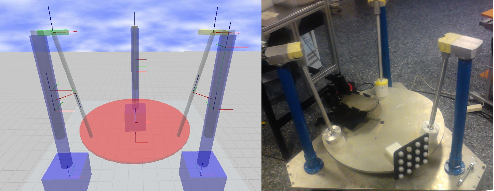
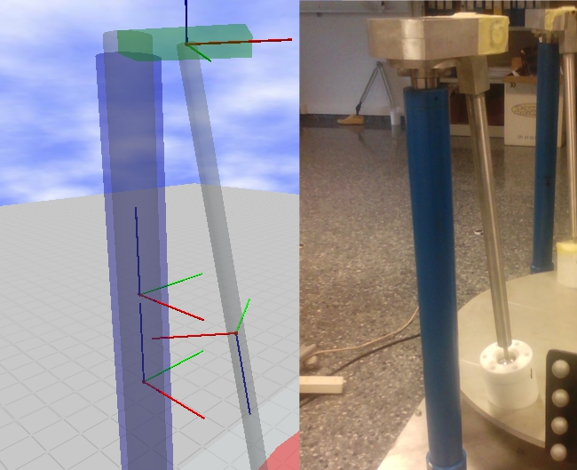
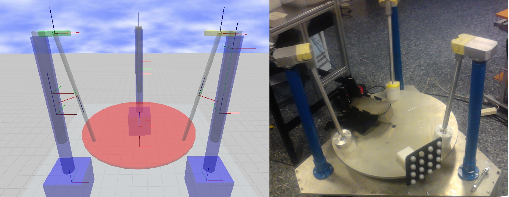
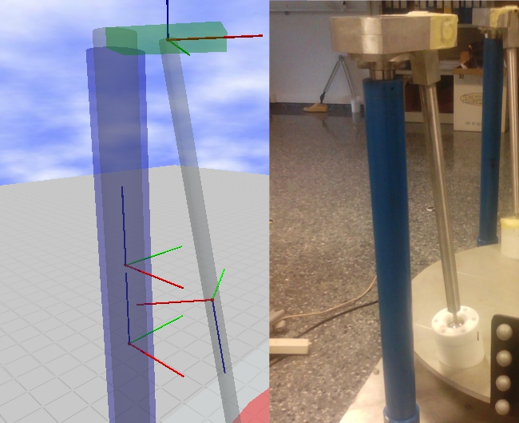

DESARROLLO DE UN SIMULADOR DE TIEMPO REAL PARA EL CONTROL DE ROBOTS BASADO EN MIDDLEWARES
UNIVERSITAT POLITÉCNICA DE VALÉNCIA
Fecha de desarrollo: octubre-mayo 2013
Descripción:
En el siguiente proyecto se pretende desarrollar un simulador para una plataforma robotizada usando el middleware de robótica ROS (Robot Operating System), haciendo uso de las librerías que éste proporciona para el modelado y representación gráfica de robots y las correspondientes para intercambio de datos. Para la implementación de controladores en tiempo real correspondientes a la plataforma robótica, se utilizará otro middleware de robótica, como es el OROCOS (Open Robot Control Software), el cual ofrece mejores prestaciones para el requerimiento de tiempo real. Para completar el simulador se usara una librería de intercambio entre ambos middlewares
ROS
OROCOS
Gazebo
Linux
C++
Proyecto desarrollado durante el último curso de la titulación Ingeniería en Automática y Electrónica Industrial.
Consistía en el desarrollo de un programa capaz de emular visualmente el estado de la plataforma robótica 3-PRS, de manera que el entorno visual desarrollado mostraba un modelo del robot en el estado físico en el que se encontrase en tiempo real. Además el sistema se enmarcaba dentro de un entorno virtual por el que podíamos navegar, desplazarnos por el escenario, acercarnos al modelo, visualizar desde múltiples puntos, etc.
A continuación podemos ver algunas imágenes que muestran el desarrollo final que se planteó.
(también puedes seguir el siguiente link para ver un vídeo del sistema en funcionamiento)
(otro video)
 



Para más detalles se puede consultar una parte del documento de memoria que se presentó.